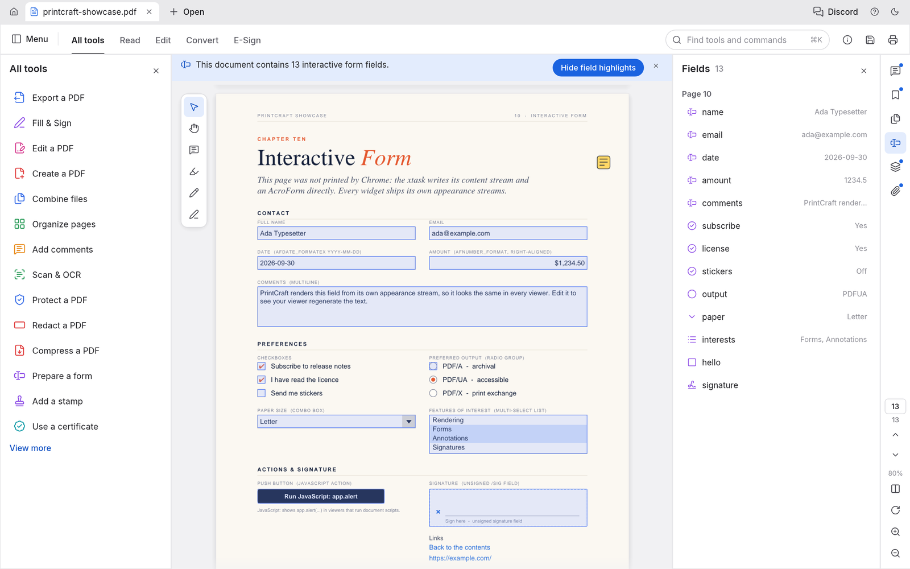

All The Essential Tools, Zero Distraction
Everything you need for everyday and professional PDF document handling.
Organize & Rearrange
Visual Thumbnail Grid with Drag & Drop
Reorder pages visually. Rotate pages by 90-degree increments, delete unwanted sheets, extract custom ranges, and drop in additional PDFs to combine on the fly.
- Batch page rotations and deletions
- Reorder with smooth live drag gestures
- Insert pages from external PDF documents

Forms & Markup
Fill, Sign & Annotate with Ease
Interact with standard AcroForm text fields, checkboxes, and radio buttons. Add highlights, strikethroughs, shapes, and fill & sign dates with clean typography.
- Interactive form field calculation and validation
- Western European cursive signature stamping
- Highlight, underline, and strikeout text markup

Document Assembly
Combine, Split & Protect with Security
Merge dozens of PDFs while retaining their outline bookmark hierarchies. Split giant documents by size or page counts. Add standard AES-128 or AES-256 password encryption with permission locks.
- Retains embedded bookmarks and outline hierarchies
- Split by page count, bookmarks, or chapter ranges
- AES-256 and RC4 encryption with permission controls